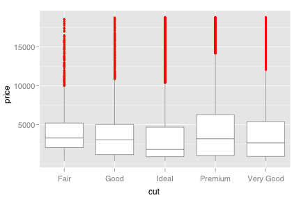
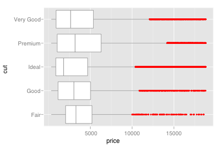
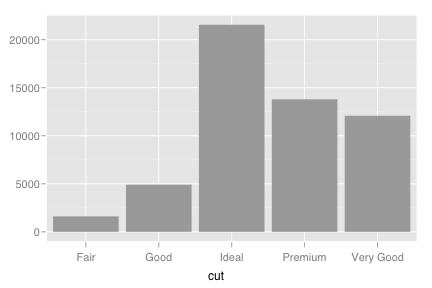
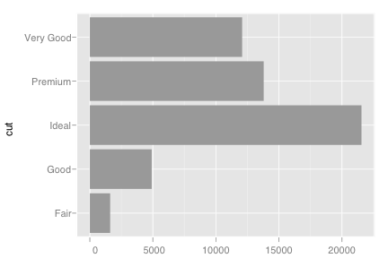
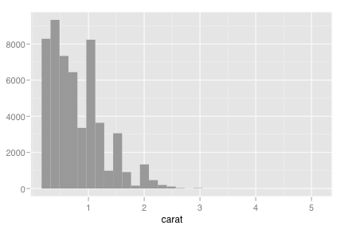
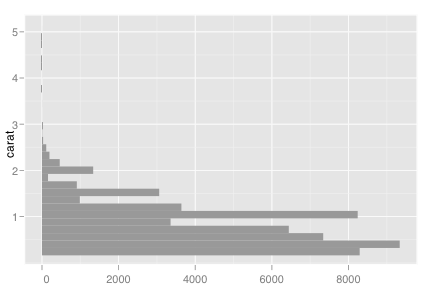
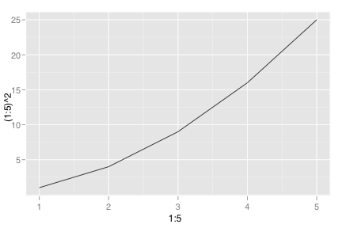
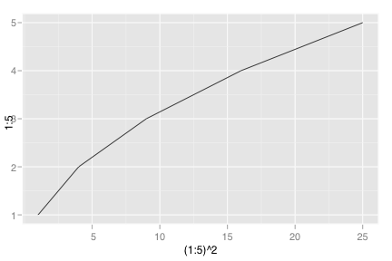

coord_flip
Flipped cartesian coordinates
Details
Flipped cartesian coordinates so that horizontal becomes vertical, and vertical, horizontal. This is primarly useful for converting geoms and statistics which display y conditional on x, to x conditional on y
See layer and qplot for more information on creating a complete plot from multiple components.
Examples
> qplot(cut, price, data=diamonds, geom="boxplot")  > .last_plot + coord_flip()  > > qplot(cut, data=diamonds, geom="bar")  > .last_plot + coord_flip()  > > qplot(carat, data=diamonds, geom="histogram")  > .last_plot + coord_flip()  > > # You can also use it to flip lines and area plots: > qplot(1:5, (1:5)^2, geom="line")  > .last_plot + coord_flip() 